A. Algoritma
Algoritma adalah kumpulan instruksi terstruktur dan terbatas yang dapat diimplementasikan dalam program komputer untuk menyelesaikan masalah. Algoritma lahir dari proses berpikir komputasional yang melibatkan analisis masalah melalui abstraksi, dekomposisi, dan pengenalan pola. Algoritma perlu ditulis dalam bentuk yang jelas, terdefinisi baik, dan memiliki langkah terbatas agar mudah dipahami manusia serta dapat diubah menjadi program. Menulis algoritma berbeda dengan menulis program: algoritma ditujukan untuk manusia, sedangkan program untuk mesin.
Ada dua cara utama merepresentasikan algoritma, yaitu diagram alir dan pseudocode. Untuk itu, penting mempelajari cara membaca algoritma (tracing) dan menuliskannya dengan baik, karena algoritma merupakan abstraksi dari program yang mempermudah implementasi.
- 1. Diagram Alir
Diagram alir dibuat dalam bentuk aliran simbol yang dapat ditelusuri dari suatu titik permulaan hingga titik akhir dari program. Diagram alir dibuat menggunakan simbol standar ANSI/ISO yang beberapa simbol dasarnya.
| Simbol | Nama | Deskripsi |
|---|---|---|
| Garis alir (flowline) | Arah yang menunjukkan aliran program dari awal hingga akhir. | |
| Terminator | Titik awal atau titik akhir suatu program. | |
| Proses | Suatu kegiatan komputasi yang dilakukan oleh program, misalnya operasi aritmatika. | |
| Keputusan | Merupakan titik percabangan yang salah satu cabangnya dapat dilalui oleh program berdasarkan suatu kondisi. | |
| Masukan (Input)/Keluaran (Output) | Melambangkan titik saat program menerima data atau menghasilkan informasi. | |
| Subprogram | Melambangkan suatu kegiatan atau proses lain yang sudah didefinisikan sebelumnya. | |
| Penghubung dalam halaman | Digunakan untuk menghubungkan suatu titik pada diagram alir ke titik lain pada halaman yang sama. | |
| Penghubung antarhalaman | Digunakan untuk menghubungkan titik pada diagram alir ke titik lain di halaman berbeda. |
Untuk memahami bagaimana diagram alir digunakan untuk menggambarkan suatu algoritma, pada bagian berikut, diberikan lima buah contoh diagram alir dari beberapa proses berpikir yang telah kalian kenal.
a. Diagram Alir 1: Menghitung Luas Persegi
b. Diagram Alir 2: Menghitung Luas Permukaan Kubus
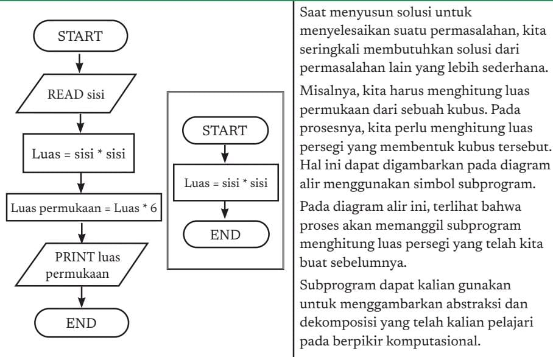c. Diagram Alir 3: Membagi Bilangan
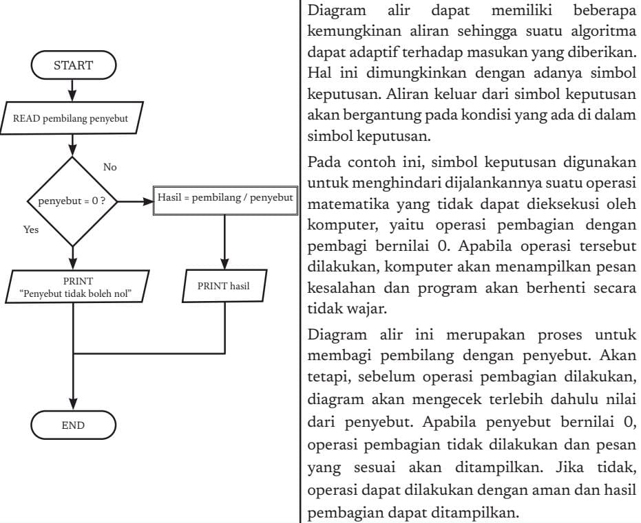d. Diagram Alir 4: Menghitung Mundur dari N hingga 1

e. Diagram Alir 5: Mencari Bilangan Terbesar dari Suatu Himpunan Bilangan
Tentunya, simbol-simbol dasar pada diagram alir dapat dipadukan untuk menghasilkan sebuah proses yang lebih kompleks. Diagram alir berikut menggambarkan proses mencari bilangan terbesar dari suatu himpunan bilangan yang diberikan. Diagram alir berikut akan membaca sebanyak N buah bilangan dan akan menghasilkan bilangan yang paling besar di antara bilangan tersebut.
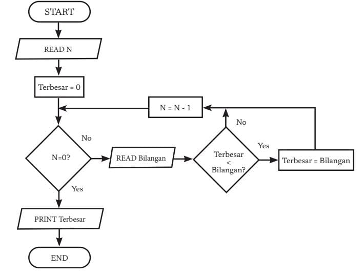f. Menelusuri Diagram Alir
Penelusuran adalah proses mengikuti jalannya sebuah algoritma langkah demi langkah menggunakan tabel sederhana. Tabel ini biasanya terbagi menjadi tiga bagian utama: masukan, nilai variabel, dan keluaran.
Proses tracing dilakukan mulai dari simbol START pada diagram alir, lalu mengikuti setiap langkah:
- Membaca data (READ) → data dari masukan dipindahkan ke variabel yang sesuai.
- Proses atau assignment → jika ada perintah seperti Terbesar = 0 atau N = N - 1, maka nilai variabel diperbarui sesuai hasil perhitungan.
- Kondisi/percabangan → jika ada simbol keputusan (misalnya N > 0?), jalur penelusuran mengikuti hasil kondisi (ya/tidak).
- Perulangan → langkah akan diulang sampai syarat berhenti tercapai.
- Keluaran (PRINT) → nilai variabel tertentu ditulis pada bagian keluaran tabel.
- END → penelusuran berakhir, hasil akhir bisa langsung dilihat di bagian keluaran.
| (a) Sebelum kalian menelusuri | (b) Saat menemukan simbol masukan dengan perintah READ N. | (c) Saat menemukan simbol proses dengan perintah terbesar = 0. |
|---|---|---|
|
Masukan: 4 1 3 2 4 Nilai variabel: N: Bilangan: Terbesar: Keluaran: |
Masukan: 4 1 3 2 4 Nilai variabel: N: 4 Bilangan: Terbesar: Keluaran: |
Masukan: 4 1 3 2 4 Nilai variabel: N: 4 Bilangan: Terbesar: 0 Keluaran: |
| (d) Saat menemukan simbol proses dengan ekspresi N = N - 1. | (e) Saat N bernilai 0, Lembar Kerja kalian akan menjadi seperti ini. | (f) Saat menemukan simbol proses dengan perintah keluaran terbesar. |
|---|---|---|
|
Masukan: 4 1 3 2 4 Nilai variabel: N: 4 → 3 Bilangan: Terbesar: Keluaran: |
Masukan: 4 Nilai variabel: N: 4 → 3 → 2 → 1 → 0 Bilangan: 1 3 2 4 → Terbesar: 4 Keluaran: |
Masukan: 4 1 3 2 4 Nilai variabel: N: 0 Bilangan: Terbesar: 4 Keluaran: 4 |
- 2. Pseudocode
Pseudocode itu semacam cara menulis algoritma dalam bentuk bahasa sehari-hari yang mirip kode program, tapi tidak terikat aturan bahasa pemrograman tertentu. Jadi dia lebih fleksibel dan gampang dipahami. Kalau diagram alir kan pakai simbol-simbol, kadang susah untuk menggambarkan detail langkahnya. Nah, pseudocode ini dipakai untuk menuliskan langkah algoritma baris per baris supaya jelas.
Ada beberapa aturan dasar:
a. Pseudocode 1: Menghitung Luas Persegi
| Deskripsi Tingkat Tinggi | Pseudocode |
|---|---|
|
1. Baca nilai sisi persegi. 2. Hitung luas dengan mengkuadratkan nilai sisinya. 3. Cetak luas. |
Algoritma Menghitung Luas Persegi Input: Nilai Panjang Sisi Persegi. Output: Luas Persegi tercetak. input sisi luas ← sisi * sisi print luas |
b. Pseudocode 2: Menghitung Luas Permukaan Kubus
| Deskripsi Tingkat Tinggi | Pseudocode |
|---|---|
|
1. Baca nilai sisi kubus. 2. Hitung luas (persegi) dari sisi kubus. Kalikan dengan 6 untuk mendapatkan luas permukaan. 3. Cetak luas permukaan. |
Algoritma Menghitung Luas Permukaan Kubus Input: Nilai Panjang Sisi Kubus. Output: Luas Permukaan Kubus tercetak. input sisi luas_permukaan ← (sisi * sisi) * 6 print luas_permukaan |
c. Pseudocode 3: Membagi Bilangan
| Deskripsi Tingkat Tinggi | Pseudocode |
|---|---|
|
1. Baca nilai pembilang dan penyebut. 2. Jika penyebut bernilai 0, cetak tulisan “Penyebut tidak boleh nol”. 3. Jika penyebut tidak bernilai nol, lakukan pembagian pembilang dengan penyebut dan simpan hasilnya. 4. Cetak hasil pembagian. |
Algoritma Membagi Bilangan Input: Pembilang dan Penyebut. Output: Hasil Pembagian tercetak. input pembilang, penyebut if penyebut = 0 then print "Penyebut tidak boleh nol" else hasil ← pembilang / penyebut print hasil |
d. Pseudocode 4: Menghitung Mundur dari N hingga 1
| Deskripsi Tingkat Tinggi | Pseudocode |
|---|---|
|
1. Baca nilai N. 2. Selama N > 0, ulangi. 3. Cetak tulisan N. 4. Kurangi nilai N dengan 1. |
Algoritma Menghitung Mundur dari N hingga 1 Input: Nilai N. Output: Angka hasil hitung mundur dari N sampai 1 tercetak. input N while N > 0 print N N ← N - 1 |
e. Pseudocode 5: Mencari Bilangan Terbesar dari Suatu Himpunan Bilangan
| Deskripsi Tingkat Tinggi | Pseudocode |
|---|---|
|
1. Jika himpunan bilangan kosong, maka tidak ada bilangan terbesar. 2. Jika himpunan bilangan tidak kosong, asumsikan bilangan pertama sebagai bilangan terbesar saat ini. 3. Untuk setiap bilangan anggota himpunan: bandingkan dengan bilangan terbesar saat ini. Jika lebih besar, jadikan bilangan itu sebagai bilangan terbesar saat ini. 4. Setelah semua dibandingkan, bilangan terbesar saat ini adalah hasilnya. |
Algoritma Mencari Bilangan Terbesar Input: Himpunan bilangan L. Output: Bilangan terbesar pada himpunan bilangan L. if size of (L) = 0 then return null largest ← elemen pertama L for each item in L do if item > largest then largest ← item return largest |
B. Bahasa Pemrograman Prosedural
Belajar bahasa pemrograman itu sama halnya dengan belajar bahasa manusia. Kita tidak langsung memulai dari teori, melainkan dari membaca contoh-contoh sederhana yang bisa dipakai sehari-hari. Dari situ, kita mulai mengenal kosakata penting dan pola dasar, lalu secara bertahap berlanjut ke konsep yang lebih rumit dan aturan tata bahasa yang formal. Bedanya, kalau bahasa manusia hanya dipahami sebagai teks, bahasa pemrograman selain dipahami oleh manusia juga bisa dimengerti oleh komputer sehingga bisa dijalankan.
Terdapat banyak bahasa pemrograman, dan setiap bahasa memiliki paradigma, keunggulan, tantangan masing-masing. Pada unit ini, kalian diperkenalkan pada bahasa pemrograman C yang merupakan salah satu bahasa pemrograman prosedural. Saat mempelajari bahasa C pada unit ini di kelas X, kalian akan mempelajari empat elemen generik, yaitu variabel, ekspresi, struktur kontrol keputusan, dan struktur kontrol perulangan. Empat elemen ini berlaku di semua bahasa pemrograman prosedural lainnya. Teks kode program dalam bahasa-bahasa pemrograman lain banyak yang mirip dengan teks bahasa C. Oleh karena itu, kalian perlu menyadari bahwa unit ini tidak dibuat hanya agar kalian menguasai pemrograman dengan bahasa C, tetapi bagaimana kalian dapat menggunakan keempat elemen dasar tersebut dalam membuat suatu program.

C. Bahasa Pemrograman C
Bahasa C dikembangkan oleh Dennis M. Ritchie dan Brian W. Kernighan pada awal 1970-an, berhubungan erat dengan sistem operasi UNIX yang sebagian besar ditulis dalam bahasa C. Dari sejarahnya lahirlah beberapa standar bahasa C, seperti K&R, ANSI-C (1989), AT&T (superset C++), dan GNU Coding Standards, serta berbagai versi untuk PC (misalnya Lattice C, Microsoft C, Turbo C/Borland C++). Bahasa C banyak digunakan untuk membuat sistem operasi, program sistem, pemrograman tingkat rendah (dekat ke perangkat keras), kontrol peralatan, toolkit pemrograman, dan aplikasi. Kelebihan C: kode singkat, efisien, dan cukup mudah dibaca. Kekurangan C: lebih sulit dibaca dibandingkan bahasa tingkat tinggi lain, meski lebih mudah daripada bahasa mesin.
- 1. Membuat Program Pertama dengan Bahasa C
Sekarang, saatnya kalian memulai perjalanan kalian dalam membuat program dengan bahasa C. Namun, sebelum kalian mulai membuat program, ada persiapan yang harus kalian lakukan. Pertama, kalian membutuhkan sebuah tempat untuk bekerja, yang disebut lingkungan pengembangan. Kedua, kalian harus memahami proses membuat program mulai dari mengetikkan kode program hingga menghasilkan program yang dapat dieksekusi atau dijalankan oleh komputer.

Ini langkah-langkah untuk membuat program di C! (rumit sekali). Namun sekarang, ada IDE (Integrated Development Environment), semuanya jadi mudah! Tulis program, satu kali klik, langsung bisa tampil….
Untuk membuat program C dibutuhkan beberapa perangkat:
Awalnya perangkat itu terpisah, lalu dibuat IDE (Integrated Development Environment) yang mencakup semuanya.
- Contoh IDE C di komputer: Eclipse, Atom, Code::Blocks, Geany, Visual Studio.
- Contoh IDE online (cloud): Ideone, tutorialspoint.com, onlinegdb.com.
- IDE di ponsel: CppDroid, Mobile C, Coding C.
- 2. Struktur Program Bahasa C
Fungsi tambahan IDE: auto-complete, kolaborasi, integrasi repositori online. Setiap perusahaan biasanya punya standar IDE masing-masing. Menguasai IDE membuat pemrogram lebih produktif, efisien, dan mudah bekerja dalam tim.
Bahasa C merupakan bahasa yang terstruktur. Beberapa struktur dasar pada program bahasa C telah terlihat pada program yang kalian tulis sebelumnya. Untuk memudahkan penjelasan, kode program berikut akan diberi nomor baris di bagian kiri. Penting: Jika kalian ingin mencoba menjalankan contoh program dengan nomor baris seperti di bawah ini, kalian tidak perlu mengetikkan nomor baris tersebut.
| Baris Kode |
|---|
| #include<stdio.h> |
| int main(){ |
| printf("Halo Dunia!\n"); |
| return 0; |
| } |
Program Halo Dunia! dalam bahasa C diawali dengan baris #include Kemudian, pada baris keempat terdapat pernyataan return 0;. Pernyataan ini digunakan untuk memberi tahu sistem operasi bahwa program telah selesai dijalankan dengan benar. Jika nilai yang dikembalikan adalah 0, berarti program berjalan normal. Sedangkan jika nilai yang dikembalikan bukan 0, maka itu menandakan adanya kesalahan saat program berhenti.
- Ubah kalimat Halo Dunia menjadi Hello World!
- Cetak dua baris kalimat di layar, yaitu “Halo Dunia!” dan “Saya siap belajar pemrograman!”
a. Komponen Program dalam Bahasa C
Sebelum membuat program yang lebih kompleks, yang melibatkan ekspresi, struktur kontrol keputusan, atau struktur kontrol perulangan, kalian perlu memahami makna dari berbagai komponen penyusun bahasa C, di antaranya meliputi kata kunci, identifier, variabel, tipe data, dan konstanta.
- Kata Kunci (Keyword)
- Identifier
- Tipe Data
- Variabel
- Konstanta
- Membaca dan Menulis
Kata kunci merupakan kata yang telah memiliki makna khusus yang tidak dapat diubah oleh pemrograman. Dengan kata lain, kalian tidak dapat menggunakan sebagai suatu identifier. Terdapat 32 kata kunci standar pada bahasa C, yaitu:
auto, double, int, struct, break, else, long, switch, case, enum, register, typedef, char, extern, return, union, continue, for, signed, void, do, if, static, while, default, goto, sizeof, volatile, const, float, short, dan unsigned.
Identifier adalah nama unik yang dapat kalian ingat yang diberikan ke dalam entitas program C, seperti variabel dan fungsi. Identifier terdiri atas serangkaian karakter dengan aturan berikut.
a. Tidak boleh sama dengan kata kunci (keyword) dalam bahasa C.
b. Disusun dari kombinasi huruf (besar dan kecil), angka, dan underscore ”_”
c. Harus dimulai dengan huruf atau underscore.
d. Bersifat case-sensitive, atau sensitif terhadap huruf besar atau kecil (kapitalisasi karakter). Dengan kata lain, sisi dan Sisi akan dianggap sebagai dua identifier yang berbeda.
Komputer dapat mengolah data yang beragam. Pada dasarnya, data yang diolah oleh komputer, baik berupa numerik ataupun karakter, akan disimpan dalam bentuk biner. Oleh karena itu, nilai yang kalian masukkan dalam komputer pastilah akan disimpan dalam bentuk biner. Program perlu mengetahui bagaimana bilangan biner dibaca sehingga diperlukan suatu mekanisme untuk memberi tahu program tentang data yang kita simpan pada variabel tersebut. Hal ini diakomodir melalui tipe data. Suatu tipe data akan memiliki nama tipe, jenis data yang disimpan, dan rentang yang berbeda.
| Nama Tipe | Jenis Data | Ukuran Memori | Rentang |
|---|---|---|---|
| int | Bilangan bulat | 4 byte | -2.1×10⁹ hingga 2.1×10⁹ |
| short | Bilangan bulat | 2 byte | -32768 hingga 32767 |
| long | Bilangan bulat | 8 byte | -9.2×10⁸ hingga 9.2×10⁸ |
| float | Bilangan riil | 4 byte | 1.2×10³⁸ hingga 3.4×10³⁸ |
| double | Bilangan riil | 8 byte | 2.3×10³⁰⁸ hingga 1.7×10³⁰⁸ |
| char | Karakter* | 1 byte | -127 hingga 128 |
Perhatikan bahwa rentang yang diberikan memungkinkan nilai negatif hingga positif, atau disebut tipe data signed. Apabila kalian menambahkan kata kunci unsigned di depan tipe data, tipe data tersebut hanya akan menampung bilangan positif dengan rentang dari 0 hingga 2jumlah bit - 1.
Pada matematika, kalian mengenal variabel sebagai sebuah wadah untuk menyimpan suatu nilai. Variabel pada program memiliki fungsi yang sama. Nilai yang diberikan pada sebuah variabel akan disimpan di memori komputer. Komputer memberikan alamat pada lokasi memori tersebut yang sulit diingat oleh manusia. Oleh karena itu, variabel diberikan nama simbolik yang mudah untuk diingat oleh kalian dengan menggunakan identifier.
Dalam bahasa C, variabel perlu dideklarasikan dengan memberikan tipe data dan identifiers sebelum dapat digunakan. Deklarasi dapat dilakukan dengan menggunakan pernyataan berikut:
Pada saat deklarasi, variabel juga dapat diberikan nilai awal, misalnya dalam bentuk:
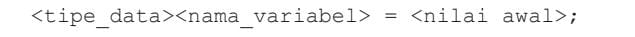Variabel dengan tipe yang sama dapat dideklarasikan secara ringkas seperti:
Beberapa contoh untuk mendeklarasikan variabel dapat dilihat pada tabel dibawah ini:
| Tipe Data | Identifier | Deklarasi | Deklarasi dengan Nilai Awal |
|---|---|---|---|
| int | totalHarga | int totalHarga; |
int totalHarga = 150000; |
| short | usia | short usia; |
short usia = 29; |
| long | jumlahAtom | long jumlahAtom; |
long jumlahAtom = 9123151252214; |
| float | jarak | float jarak; |
float jarak = 2.28; |
| double | galat | double galat; |
double galat = 0.000000001234; |
| char | huruf | char huruf; |
char huruf = 'a'; |
Deklarasi secara ringkas misalnya dapat dilakukan seperti berikut: int panjang = 1, lebar = 2, luas; float alas, sisi, volume; Tempat deklarasi variabel akan berpengaruh pada penggunaan variabel tersebut. Apabila deklarasi variabel dilakukan di dalam sebuah fungsi, variabel tersebut hanya dapat digunakan di dalam fungsi tersebut. Variabel seperti ini disebut variabel lokal. Apabila deklarasi dilakukan di luar fungsi, variabel tersebut akan dapat diakses di bagian program mana pun. Variabel ini disebut variabel global.
Berbeda dengan variabel yang nilainya dapat berubah, konstanta tidak dapat diubah. Saat dideklarasikan, nilai dari konstanta diberikan dan tidak dapat diubah kembali. Apabila kalian memaksa mengubah konstanta, kompilator akan memberikan pesan kepada kalian. Penggunaan konstanta yang lazim ialah untuk menyimpan nilai konstan seperti pi (π), rho (ρ), dan konstanta lainnya yang lazim digunakan. Konstanta dapat dideklarasikan seperti variabel, dengan menambah kata kunci const di depan tipe data. Nilai awal harus langsung diberikan pada saat deklarasi. Misalnya, deklarasi konstanta pi dapat dilakukan sebagai berikut: const float PI = 3.14;
Program komputer bisa membantu manusia kalau punya kemampuan berkomunikasi. Salah satu bentuk komunikasi dasar adalah lewat Command Line Interface (CLI), yaitu interaksi berbasis teks. Program membaca input pengguna dan menuliskan output sebagai respon. Untuk itu digunakan header stdio.h yang menyediakan fungsi input-output standar, yaitu:
Contoh sederhananya: program membaca sebuah bilangan dari pengguna lalu menampilkannya kembali.
Pada baris keempat, program memanggil fungsi scanf untuk membaca masukan dari pengguna. Pada saat baris ini dieksekusi, program akan berhenti hingga pengguna memasukkan suatu bilangan dan menekan tombol enter.
Perhatikan bahwa pada baris tersebut, fungsi scanf menerima dua buah parameter, yaitu %d yang merupakan spesifikasi format (format specifier) dan &bilangan yang merupakan variabel untuk menampung nilai yang dibaca. Artinya, pada saat kalian menekan enter, program akan membaca nilai 10 yang kalian masukkan sebagai sebuah nilai bertipe data int, dan akan menyimpannya ke variabel bilangan. Di depan bilangan, terdapat tanda ampersand (&) yang wajib digunakan untuk melakukan pembacaan. Makna dari simbol & akan dijelaskan lebih detail pada kesempatan lain.
Setiap tipe data memiliki spesifikasi format yang dapat digunakan untuk menjelaskan jenis data kepada program. Ingat, program membaca dan menyimpan semua data sebagai bilangan biner.
| Nama Tipe | Spesifikasi Format (Signed) | Spesifikasi Format (Unsigned) |
|---|---|---|
| int | %d | %ud |
| short | %d | %ud |
| long | %ld | %uld |
| float | %d | %ud |
| double | %ld | %uld |
| char | %c | %uc |
Baris kelima dan keenam adalah pernyataan untuk menulis menggunakan fungsi printf. Pada baris kelima, kalian memerintahkan program untuk mencetak suatu kalimat yang diapit dengan tanda petik ganda. Pada baris keenam, kalian memerintahkan program untuk mencetak nilai dari variabel bilangan. Mirip seperti fungsi scanf, kalian menemukan adanya spesifikasi format dan variabel. Bedanya, di depan variabel, tidak perlu ada tanda ampersand.
Saat dipanggil, program akan mencetak nilai dari variabel bilangan dengan format yang diberikan. Hanya saja, ada karakter baru yang muncul, yaitu \n. Ini adalah escape sequence yang digunakan untuk membuat garis baru, persis seperti ketika kalian menekan tombol enter pada aplikasi pengolah kata. Data yang ditulis setelah \n akan dicetak di baris yang baru oleh program. Ada beberapa escape sequence lain yang dapat digunakan, yaitu:
Tentunya, kalian juga menggunakan fungsi printf untuk mencetak tipe data lain, misalnya bilangan riil. Pada bilangan riil, kalian dapat membatasi jumlah digit di belakang desimal dengan memodifikasi spesifikasi format. Perhatian kode berikut yang akan menampilkan angka 12.345 ke layar.
Kalian juga dapat membaca atau menulis dua atau lebih nilai sekaligus seperti pada contoh berikut:
- 3. Belajar Menulis Program Sambil Menyelesaikan Masalah
Karena materi ini bersifat pengenalan, masalah yang diberikan sudah memiliki spesifikasi yang terstruktur. Namun, dalam praktiknya, seorang programmer harus membuat spesifikasi sendiri—termasuk menentukan tujuan program, format masukan, dan format keluaran. Nantinya, pada unit praktik lintas bidang (PLB), siswa akan diajak membuat program untuk menyelesaikan masalah nyata di lingkungan sekitar mereka.
| Bagian Penjelasan | Keterangan |
|---|---|
| Nomor dan Nama Problem | Identitas dari permasalahan. |
| Deskripsi Soal | Memberikan konteks permasalahan yang perlu diketahui oleh siswa dalam membuat program. |
| Format Masukan | Memberikan susunan data yang diberikan pada program oleh pengguna, beserta ukuran dari data tersebut. |
| Format Keluaran | Memberikan susunan informasi yang akan dikeluarkan oleh program kepada pengguna. |
| Contoh Masukan | Memberikan contoh data yang dimasukkan. |
| Contoh Keluaran | Memberikan contoh informasi yang dikeluarkan program berdasarkan data yang dimasukkan. |
- 4. Ekspresi
Ekspresi merupakan bagian yang tidak terpisahkan dari program. Di dalam matematika, ekspresi terdiri atas kombinasi beberapa operand dan operator yang memiliki makna. Kalian telah terbiasa menulis ekspresi pada matematika, 166 Informatika SMA Kelas X misalnya dalam penjumlahan 10 + 5 yang melibatkan dua buah operand (10 dan 5) dan sebuah operator (+). Ekspresi pada pemrograman mirip dengan ekspresi yang kalian pelajari pada matematika, tetapi diperkaya dengan tambahan operator-operator untuk memudahkan kalian dalam menulis program.
Berdasarkan jumlah operand, suatu ekspresi dapat dibagi menjadi ekspresi:
Berdasarkan fungsinya, operator dalam bahasa C dapat dibagi menjadi operator penugasan, operator aritmatika, operator logika, serta increment dan decrement.
a. Operator Penugasan
Operator penugasan (simbol '=’) untuk memberikan suatu nilai konstanta atau nilai yang diperoleh dari suatu ekspresi ke dalam variabel. Operand di sisi kiri akan menerima nilai dari operand di sisi kanan operator penugasan. Contoh penugasan telah kalian lakukan pada saat melakukan deklarasi variabel seperti:
| int a = 5; |
Perhatikan dan ingat baik-baik bahwa makna dari simbol ‘=’ dalam bahasa C sangat berbeda dengan tanda “sama dengan” dalam matematika!
b. Operator Aritmatika
Operator aritmatika digunakan untuk melakukan operasi matematika yang kalian kenal. Ada perbedaan notasi penulisan operator dengan yang kalian pelajari pada mata pelajaran Matematika.
| Operasi Matematika | Contoh Ekspresi Aljabar | Operator Bahasa C | Ekspresi Bahasa C |
|---|---|---|---|
| Penjumlahan | 1 + 2 | + | 1 + 2 |
| Pengurangan | a - b | - | 1 - b |
| Perkalian | ab | * | a * b |
| Pembagian | a/b | / | a / b |
| Modulo | a mod b | % | a % b |
Penting: Hati-hati dalam melakukan pembagian pada bahasa C. Bahasa C sangat sensitif terhadap tipe data sehingga pembagian dua buah bilangan bulat akan menghasilkan bilangan bulat. Sebagai contoh, 10/3 pada kode program C saat dieksekusi akan menghasilkan nilai 3.
Seperti pada matematika, suatu ekspresi dapat terdiri atas banyak operator. Agar ekspresi tersebut dieksekusi dengan benar, diperlukan suatu urutan operasi (atau operator precedence). Urutan operasi dari operator pada bahasa C ialah:
Selain operator-operator matematika tersebut, C juga memiliki operatoroperator lain yang akan dipelajari di lain kesempatan. Daftar lengkap semua operator pada C dapat dilihat di http://en.cppreference.com/w/c/language/ operator_ precedence
Hasil ekspresi dapat disimpan dalam suatu variabel menggunakan operator penugasan. Misalnya:
| a = 5; | b = a + 1; | b = b + 5; | c = (a + b)*2 + a; | d = c % b; |
c. Operator Increment dan Decrement
Selain operator penugasan majemuk pada bagian sebelumnya, bahasa C juga memberikan operator unary yang lebih khusus untuk menambah (++) atau mengurangi nilai suatu variabel (--) dengan angka 1. Operator ini dapat diletakkan sebelum (prefix) atau setelah (postfix) operand.
Pada penulisan dalam bentuk prefix, perubahan nilai akan langsung dilakukan pada nilai variabel sebelum nilai variabel tersebut digunakan pada ekspresi. Sebagai contoh, setelah dua baris kode berikut dijalankan, nilai x akan bernilai 2 dan y akan bernilai 1.
| int x = 1; | int y = ++x; |
Sebaliknya, pada penulisan dalam bentuk postfix, nilai variabel akan digunakan terlebih dahulu pada ekspresi, baru perubahan dilakukan. Sebagai contoh, setelah dua baris kode berikut dijalankan, nilai x dan y akan bernilai 1.
| int x = 1; | int y = x++; |
d. Operator Logika, Relasional, dan Kesamaan
Di samping operator aritmatika, juga dikenal operator logika, relasional, dan kesamaan. Ekspresi yang menggunakan operator ini akan memiliki nilai benar (true atau dalam bahasa C bernilai tidak sama dengan 0) atau salah (false atau bernilai 0). Operator pada kategori ini memiliki peran yang sama dengan operator logika, relasional, dan kesamaan pada mata pelajaran Matematika.
| Aljabar | Bahasa C | Contoh | Makna |
|---|---|---|---|
| Operator Kesamaan / Pertidaksamaan | |||
| = | == | a == b | Apakah nilai a sama dengan b? |
| ≠ | != | a != b | Apakah nilai a tidak sama dengan b? |
| Operator Relasional | |||
| > | > | a > b | Apakah a lebih besar dari b? |
| < | < | a < b | Apakah a lebih kecil dari b? |
| ≥ | >= | a >= b | Apakah a lebih besar atau sama dengan b? |
| ≤ | <= | a <= b | Apakah a lebih kecil atau sama dengan b? |
| Operator Logika | |||
| AND | && | a > 0 && b > 0 | Apakah a dan b lebih besar daripada 0? |
| OR | || | a > 0 || b > 0 | Apakah a atau b lebih besar daripada 0? |
| NOT | ! | !(a > 0) | Apakah a tidak lebih besar daripada 0? |
e. Operator Kondisional (Ternary)
Operator kondisional adalah operator ternary yang akan mengembalikan nilai berdasarkan suatu kondisi tertentu. Misalnya, kalian ingin mengembalikan nilai 1 jika suatu ekspresi a < 3 bernilai benar, dan mengembalikan nilai 0 jika sebaliknya. Kalian dapat menuliskannya dalam bentuk
| n = ((a<3)?1:0) |
Bentuk umum penggunaan operator ini adalah sebagai berikut:
| (kondisi ? ekspresi-1 : ekspresi-2 ) |
- 5 Struktur Kontrol Keputusan
Pada bagian ini kita akan mempelajari bagaimana pengambilan keputusan dilakukan dalam sebuah program. Istilah yang sering digunakan untuk ini adalah kondisional. Apa itu kondisional? Secara sederhana, kondisional adalah sebuah bentuk pernyataan “jika ..., maka ...”. Pernyataan ini dibuat untuk mengekspresikan sebuah aksi berdasarkan sebuah kondisi tertentu. Sebagai contoh, ketika kita diminta untuk mengklasifikasikan sebuah bilangan merupakan bilangan ganjil atau genap, maka dapat kita membuat sebuah aturan sebagai berikut:
Proses tersebut merupakan salah satu ilustrasi dari sebuah pernyataan kondisional. Pada bahasa pemrograman C, ada beberapa jenis pernyataan kondisional, misalnya pernyataan if-else, pernyataan switch-case, dan pernyataan yang bersarang.
a. Struktur Kontrol Keputusan If - Else
Ada beberapa variasi penggunaan struktur kontrol keputusan If - Else. Bentuk umum dari pernyataan if adalah sebagai berikut.
Bagian kondisi dapat diisi dengan ekspresi yang menghasilkan nilai benar atau salah. Apabila kondisi menghasilkan nilai benar, semua pernyataan yang berada di dalam struktur kontrol keputusan tersebut akan dieksekusi oleh program. Sekarang, perhatikan program berikut, dan lakukanlah penelusuran untuk memeriksa keluaran dari program tersebut.

Program tersebut menggunakan struktur keputusan pada baris 6-8. Ekspresi yang digunakan pada bagian kondisi ialah a==b, sedangkan pernyataan yang dieksekusi jika kondisi benar terdapat pada baris 7.
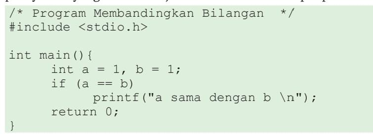Struktur kontrol keputusan dapat menambahkan blok else yang akan dieksekusi apabila kondisi bernilai salah.
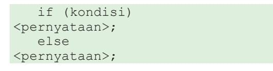Misalnya, untuk mengecek apakah suatu bilangan merupakan bilangan ganjil atau genap, kalian dapat memanfaatkan struktur if-else sebagai berikut.
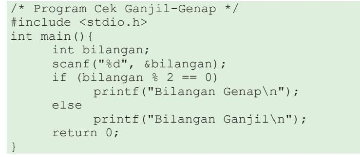Apabila kondisi makin kompleks, struktur if-else ini dapat dikembangkan kembali menjadi:
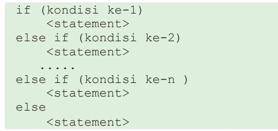b. Struktur Kontrol Keputusan Switch-Case
Struktur kontrol keputusan yang memiliki cabang banyak dapat dibuat lebih sederhana menggunakan struktur switch-case. Bentuk umum dari struktur ini ialah sebagai berikut.
Sebagai contoh, perhatikan kode program berikut:
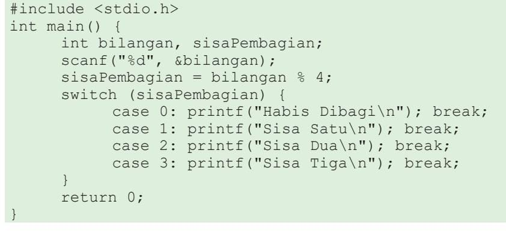Pada program di atas, struktur switch-case memeriksa nilai yang ada pada variabel sisa pembagian. Karena nilai tersebut merupakan sisa pembagian sebuah bilangan dengan empat, hanya ada empat kemungkinan nilai, yaitu 0 sampai 3. Setiap kemungkinan nilai tersebut diperiksa melalui empat buah struktur case yang akan mencetak kalimat ke layar yang sesuai dengan sisa pembagian yang diperoleh.
c. Struktur Kontrol Keputusan Bersarang
Sebuah struktur kontrol dapat menjadi bagian dari suatu struktur kontrol lain. Hal ini disebut nested atau tersarang. Pada contoh berikut, diberikan sebuah kode program yang memiliki struktur kontrol keputusan bersarang. Telusurilah program tersebut jika program diberi masukan 1000 dan 10.
- 6. Struktur Kontrol Perulangan
Salah satu keunggulan program komputer daripada manusia ialah kemampuannya untuk mengolah data yang berukuran besar atau melaksanakan suatu aksi berulang kali dalam periode waktu yang lama tanpa merasa bosan atau lelah. Hal ini dimungkinkan dengan adanya suatu kontrol perulangan. Pernyataan perulangan atau loop merupakan struktur program untuk keperluan iterasi, yaitu memproses satu atau beberapa pernyataan secara berulang (looping) berdasarkan kondisi tertentu. Program C menyediakan tiga bentuk pernyataan loop, yaitu:
- for loop
- while loop
- do...while loop
a. Struktur Kontrol Perulangan for
Pernyataan ini umumnya digunakan untuk memproses pernyataan secara berulang-ulang, dengan jumlah perulangan yang dilakukan telah diketahui sebelumnya. Misalnya, berjalan sebanyak n langkah ke depan, atau mencetak barisan dari suku pertama hingga suku ke-n. Struktur kontrol perulangan for adalah sebagai berikut:
Struktur di atas akan dijalankan melalui proses berikut.
- Ekspresi expr1 akan dieksekusi ketika program menjalankan struktur for tersebut. Ekspresi ini biasanya berisi inisialisasi suatu variabel counter yang digunakan untuk menghitung jumlah perulangan yang telah dilakukan.
- Ekspresi expr2 merupakan suatu ekspresi bernilai benar atau salah (boolean) yang akan dicek sebelum pernyataan di dalam blok struktur dieksekusi. Apabila ekspresi ini bernilai benar, pernyataan akan dieksekusi. Sebaliknya, apabila ekspresi bernilai salah, pernyataan tidak akan dieksekusi dan perulangan berakhir. Dengan kata lain, pada bagian ini, kalian menuliskan sebuah pernyataan yang merupakan kondisi berhenti (stopping criteria) untuk memastikan perulangan yang kalian buat memiliki langkah yang terbatas (dipastikan berhenti).
- Ekspresi expr3 merupakan sebuah pernyataan yang dijalankan setelah semua pernyataan di dalam struktur for dieksekusi. Biasanya, pernyataan ini dibuat untuk mengubah nilai variabel counter yang akan makin mendekati kondisi berhenti (memastikan nilai counter akan konvergen ke kondisi berhenti).
Walaupun ketiga ekspresi tersebut bersifat opsional (tidak harus ada), kalian disarankan untuk menuliskan ketiga ekspresi tersebut saat membuat program dengan jelas dan lengkap. Untuk saat ini, kalian perlu memahami teknik untuk menulis ketiga ekspresi tersebut dengan baik.
Perhatikan contoh kode program menulis bilangan bulat berikut. Pada contoh tersebut, program akan menulis bilangan bulat dari 0 hingga kurang dari n. Telusurilah kode program tersebut dengan teknik penelusuran yang telah kalian pelajari pada saat menelusuri suatu diagram alir!
Keluaran program tersebut saat diberi masukan 5 adalah:
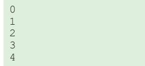Pada contoh tersebut, variabel counter yang digunakan ialah i yang nilainya diinisialisasi (diberi nilai awal) dengan nilai 0. Pada bahasa C, lazimnya counter, dimulai dari nilai 0. Berbeda dengan proses pencacahan yang biasa kalian lakukan dari 1 di dunia nyata. Hal ini terkait dengan beberapa aspek teknis di bahasa C yang dimulai dari 0.
Perlu diingat bahwa inisiasi dengan 0 ini hanyalah suatu kebiasaan masyarakat pemrogram dalam bahasa C, dan kalian tetap dapat melakukan pencacahan mulai dari 1. Kalian dapat mencoba mengubah kode program di atas sehingga counter berjalan dari 1. Selain counter yang berjalan menaik (ascending), kalian juga dapat membuat suatu counter yang berjalan turun (descending). Contoh ini disajikan misalnya pada Diagram Alir 4 dan 5 pada bagian algoritma.
b. Struktur Kontrol Perulangan While
Saat merancang perulangan, kalian bisa jadi tidak dapat menentukan berapa kali perulangan akan dilakukan. Akan tetapi, kalian mengetahui kondisi berhentinya. Misalkan instruksi berikut pada dunia nyata, “berjalan luruslah sampai ujung jalan, kemudian belok kiri.” Instruksi tersebut tidak memberikan gambaran jelas jumlah langkah yang akan kalian lakukan. Namun, secara naluriah, kalian mengetahui kapan kalian harus berhenti berjalan lurus, lalu berbelok ke arah kiri.
Pada program, suatu struktur kontrol while dikenal untuk melakukan perulangan seperti pada contoh di atas. Struktur kontrol tersebut dapat ditulis sebagai berikut. Pernyataan akan dieksekusi terus-menerus selama ekspresi kondisi bernilai benar.
Sebagai contoh, misalnya kalian akan menulis kode program untuk membaca dan menuliskan kembali bilangan bulat positif. Hal ini terus dilakukan hingga program membaca nilai -1. Program tersebut dapat kalian lihat di bawah ini.
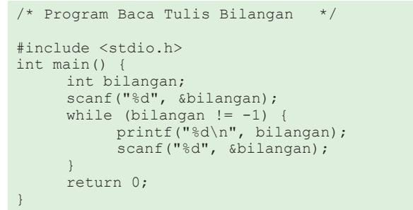c. Struktur Kontrol Perulangan Do – While
Struktur kontrol do-while memiliki perilaku yang mirip dengan while, yaitu kalian hanya mengetahui kondisi berhenti dari perulangan tersebut. Perbedaannya ialah struktur do-while dipastikan akan dikerjakan setidaknya satu kali. Bentuk umum pernyataan do .. while adalah sebagai berikut.
Salah satu contoh penggunaan struktur do-while ialah ketika kalian menulis sebuah program interaktif yang akan meminta pengguna memasukkan kembali suatu nilai hingga nilai tersebut memenuhi suatu syarat. Hal ini akan sering kalian alami ketika kalian diminta untuk mengisi ulang (retry) saat menggunakan sebuah program atau mengisi sebuah formulir elektronik.
Misal, program berikut akan terus meminta pengguna memasukkan nilai sampai pengguna tersebut memasukkan bilangan bulat positif.
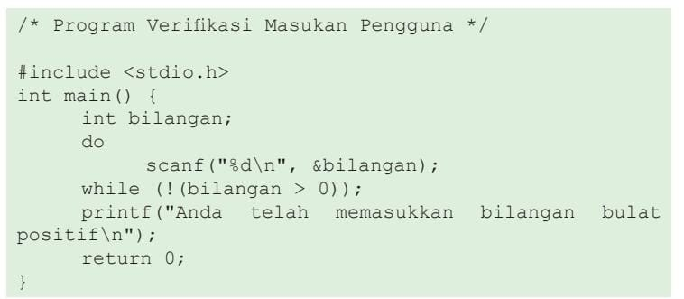d. Struktur Kontrol Perulangan Bersarang
Sama seperti struktur kontrol keputusan, kalian dapat meletakkan struktur kontrol perulangan secara bersarang. Misalnya, pada contoh program berikut yang akan mencetak suatu pola berbentuk persegi menggunakan karakter asterisk ‘*’.
- 7. Fungsi
Selama ini, kalian telah sering bertemu dengan fungsi. Di Matematika, kalian membuat suatu persamaan menggunakan fungsi seperti y = f(x) = x + 1. Fungsi f(x) menerima sebuah masukan x yang disebut fungsi daerah dan menghasilkan nilai y yang merupakan fungsi wilayah. Fungsi sangat berhubungan dengan kemampuan abstraksi yang telah kalian pelajari di berpikir komputasional sehingga program yang kalian tulis dapat ditulis dengan lebih baik.
Sejauh ini, kalian juga telah menggunakan beberapa fungsi dalam berlatih pemrograman. Pada Diagram Alir, kalian telah mengenal sebuah simbol subprogram untuk memberikan abstraksi dari suatu proses lain yang kalian gunakan dalam solusi kalian. Pada program bahasa C, struktur main merupakan sebuah fungsi yang akan dieksekusi oleh sistem operasi ketika program dijalankan. Selain itu, kalian pun telah menggunakan fungsi seperti printf dan scanf.
Pada hakikatnya, fungsi pada program melambangkan suatu kumpulan pernyataan yang memiliki tujuan tertentu. Tujuan tersebut direpresentasikan oleh nama dari fungsi tersebut. Misalnya, scanf yang memiliki fungsi untuk membaca (scan) nilai dari pengguna. Fungsi juga dapat menerima parameterparameter, dan juga dapat mengembalikan suatu nilai. Dengan membungkus kumpulan instruksi tadi ke dalam suatu fungsi, kalian dapat menggunakan kembali fungsi tersebut di berbagai lokasi dalam program kalian.
a. Membuat Fungsi
Saat membuat suatu fungsi baru, kalian perlu menentukan tiga hal tersebut: nama fungsi yang merepresentasikan tujuan dari fungsi, parameter yang dimasukkan ke dalam fungsi, serta nilai yang dikembalikan. Ketiga informasi ini disebut prototipe dari fungsi. Adapun pernyataan-pernyataan yang ada di dalam fungsi tersebut disebut implementasi dari fungsi.
Misal, kalian akan membuat sebuah fungsi untuk menghitung luas lingkaran. Maka, kalian perlu menetapkan ketiga hal tersebut dan menghasilkan prototipe fungsi berikut. Dari prototipe tersebut, kalian dapat melihat bahwa fungsi hitungLuasLingkaran memerlukan sebuah parameter dengan tipe data float yang merupakan radius dari lingkaran. Saat dipanggil, fungsi ini akan mengembalikan sebuah nilai float yang merupakan luas lingkaran.

Jika dituliskan lengkap dengan implementasinya, fungsi tersebut dapat ditulis menjadi:
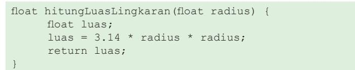Pada kode program tersebut, kata kunci return digunakan untuk mengakhiri fungsi dan mengembalikan suatu nilai. Dalam hal ini, nilai yang dikembalikan ialah luas lingkaran.
Perlu diingat bahwa prototipe dari fungsi-fungsi berikut akan dianggap sebagai fungsi yang berbeda karena memiliki parameter yang berbeda dari tipe data. Hal ini disebut overloading.
Kalian juga dapat membuat fungsi dengan jumlah parameter lebih dari satu. Misalnya, untuk menghitung luas persegi panjang berikut:
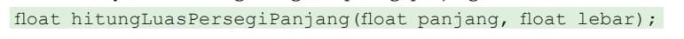Tentunya, kalian juga dapat membuat fungsi yang tidak memiliki parameter masukan, seperti yang kalian lakukan pada saat membuat fungsi main() pada program.